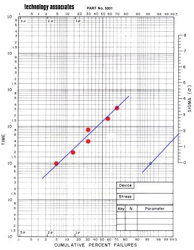

Plotting
Lognormal Distributions
A
life
distribution
is a collection of time-to-failure data, or life data, graphically presented as
a plot of the number of failures versus time. It is just like any
statistical distribution, except that the data involved are life data. The
lognormal distribution is one of the most frequently used distributions
in analyzing life or reliability data in the semiconductor industry.
The reason
why semiconductor life data fit the lognormal distribution very well is
because the lognormal
distribution is formed by the
multiplicative
effects of random variables, and multiplicative interactions of variables
are frequently encountered in many semiconductor failure mechanisms.
The
lognormal
life distribution
is one wherein the natural logarithms of the lifetime data, ln(t), form
a normal distribution. Consequently, the life data of a lognormal
distribution will also form a straight line if plotted on a
lognormal
plot,
i.e., a plot whose x- and y-axes stand for the cumulative % of failures
and the logarithmic scale of time, respectively.
Life data are often analyzed
on a per failure
mechanism basis.
Thus, an engineer who wishes to study the tendency of a device to fail
by electromigration will conduct accelerated electromigration testing on
a set of samples to generate the device's life data with respect to
electromigration, i.e., the individual lifetimes exhibited by the tested
samples before they fail by electromigration.
If one were
to plot the cumulative % of failures corresponding to these life data
against time on a lognormal
plot, one would see
that a
straight line
will emerge. Figure 1 shows an example of a lognormal plot.
|
 |
|
Figure 1.
An example of a lognormal plot using a lognormal
plotting
sheet from Technology Associates
|
Basic
guidelines
for generating a lognormal
plot include the following: 1) plot life data from a single failure
mechanism only per plot; 2) use a data collection time interval that is
in geometric progression so that the points will appear to be equally
spaced in the log time scale; 3) plot all obtained data points, even
those that reflect no additional failures and therefore resulting in the
same cum % failures as the previous point; 4) plot actual data only - do
not add unknown or unverified data; 5) draw an eyeball straight line
through the data points, slightly giving more emphasis to data points
near the media.
Once the plot
has been created, one can estimate the
median
lifetime
of the population
by interpolating from the plot the time at which 50% of the failures
would have occurred (in the example plot above, t50 is approximately at
150 hours). Also, an estimate, s, of the
standard
deviation
(shape parameter) of the distribution may be obtained by drawing a line
parallel to the distribution plot but passing through the bull's eye on
the right side of the horizontal line t=10; s is where this line
intersects the sigma nomograph on the right (in the example plot above,
s is approximately 1.8). The ability to estimate cumulative percent
failures from lognormal plots is an important tool in reliability
assessments.
See
also:
Reliability
Engineering; Life Distributions; Life Distribution Functions;
Reliability
Modeling; Failure
Analysis;
LTPD/AQL Sampling
Primary
Reference:
D. S. Peck and O. D. Trapp, Accelerated Testing Handbook, Technology
Associates.
Buy it now:
Accelerated testing handbook
HOME
Copyright
©
2005
EESemi.com.
All Rights Reserved.